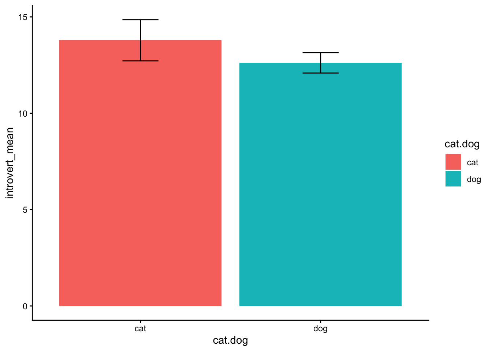
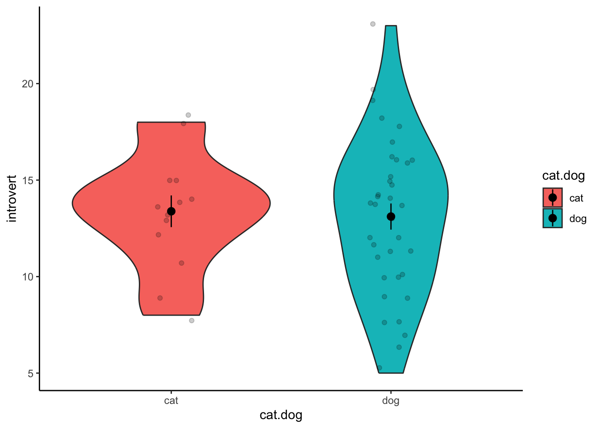
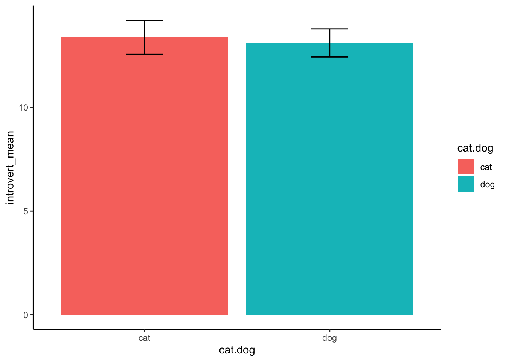
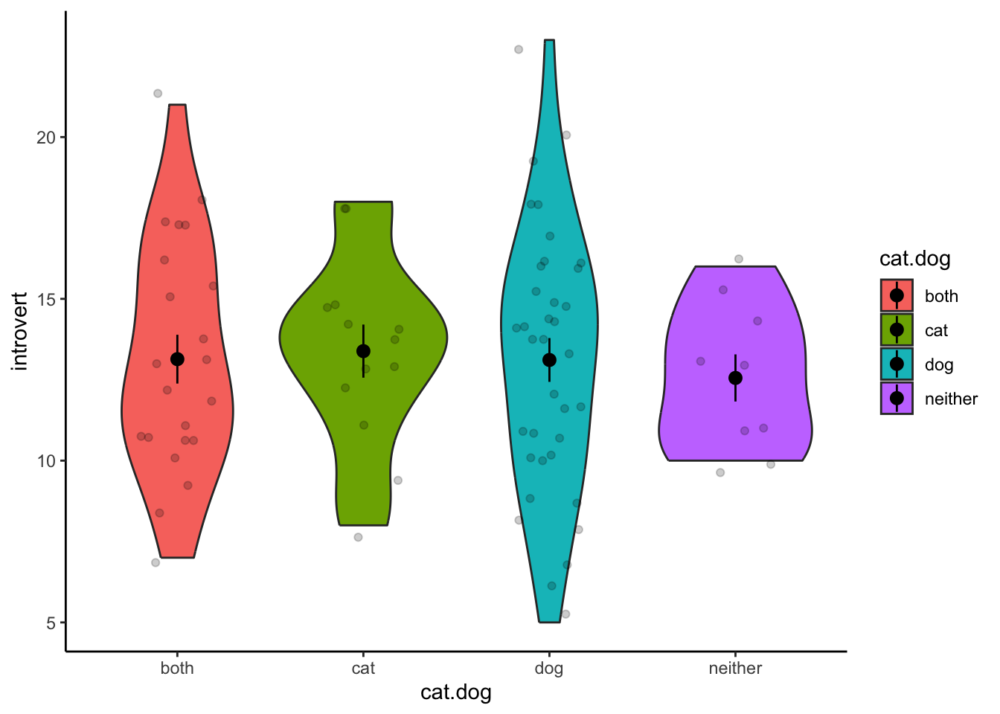
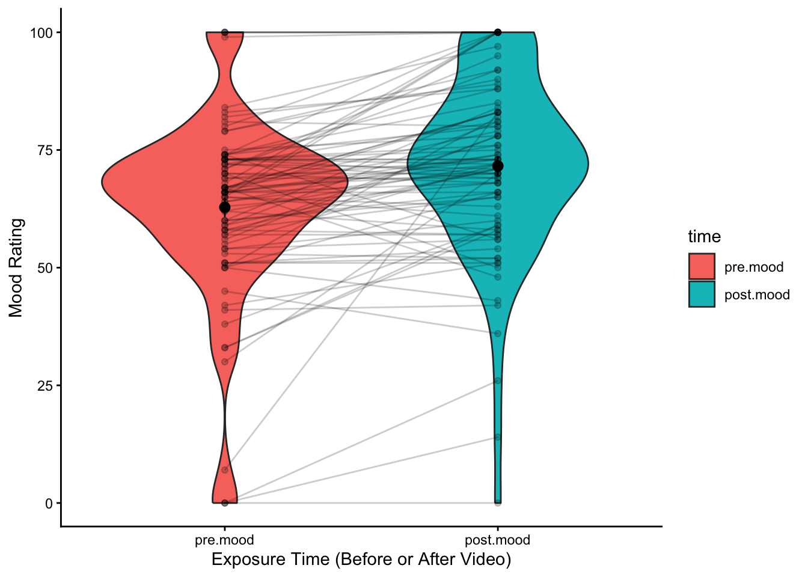

Content
Before we begin…
These are the packages we will be using in this workbook. If you have
been following along with the content each week, this package should
already be installed on your computer. Otherwise, make sure you install
them using install.packages() if you have not used them
before.
library(tidyverse)Also, something to keep in mind, throughout the next few demonstrations, whenever we analyse data, we will roughly be following this procedure:
- Prepare the data for analysis.
- Run the statistical test.
- Visualise the data.
- Write-up analysis.
The General Linear Model in R
R has built in functions that performs all the statistical tests we will be covering this week. Whenever we run an analysis in R (whether it is a t-test, ANOVA, correlation, regression, etc.), generally, we need to provide the function with two things:
- The formula we wish to test (more on this below).
- The data.frame that holds the data.
All functions take the following template:
function_name(formula,data)
In the next few weeks, we will be covering examples of different analyses. In almost all cases, the function to conduct these analyses follows this template:
Formulas
Whenever we conduct an analysis in R, we need to write the formula for the linear model. In general, this takes the following form:
dependent_variable ~ independent_variable1 + independent_variable2 + ...
The variable on the left of the ~ symbol is the
dependent variable you are trying to predict, while variables on the
right are your independent variables. The variable names are the same as
the column names in your data.frame. Each independent variable in your
model (if there is more than one) is separated by the +
symbol.
Independent-samples t-test
As covered in the lecture series, an independent samples t-test is used to assess the relationship between a categorical IV (with two levels that is between-subjects) and a continuous DV. In this example, we test whether people who self-identify as a ‘cat-person’ are more introverted than those who self-identify as a ‘dog-person’. This is an ‘independent-samples’ t-test because participants in one group are different to participants in the other group.
1. Prepare the data for analysis.
Click here
for details on the Introversion Scale. To keep things simple, we have
only used 5 items from this scale. Note: as specified in the link, low
scores on this scale indicate higher levels of introversion. Therefore,
to be consistent with the name of the measure, scores have been reversed
in the dataset (i.e., high scores corresponds with high introversion).
Also note: sometimes you will need to reverse code the items yourself,
while we don’t have to do this for this data, I have left the code in
(commented out) that would reverse score an Item 1 - to do this, we use
the recode() function within the mutate()
function.
data1.clean <- data %>%
filter(cat.dog != "both") %>%
filter(cat.dog != "neither") %>%
filter(cat.dog != "") %>%
mutate( #introversion1R = recode(introversion1,`1` = 5,`2` = 4,`3`=3,`4` = 2,`5` = 1),
introvert = introversion2 + introversion5 + introversion7 + introversion8 + introversion10) %>%
select(cat.dog,introvert)In the code above, we have removed participants that did not specify
identify as either a “dog-person” or “cat-person”. We have also used the
mutate() function to calculate an overall introversion
score. We have also only selected the variables we need for our analysis
- this step is not strictly necessary, but can help you organise your
data.
2. Run the statistical test.
To run the t-test, we use the function t.test(). As
mentioned above, the first argument is the formula. In this analysis,
the DV is called introvert and the IV is called
cat.dog, so the formula is
introvert ~ cat.dog. The second argument or the
t.test() function is the cleaned data.frame, which we’ve
called data1.clean.
t.test(introvert ~ cat.dog,data1.clean)##
## Welch Two Sample t-test
##
## data: introvert by cat.dog
## t = -0.10353, df = 96.745, p-value = 0.9178
## alternative hypothesis: true difference in means between group cat and group dog is not equal to 0
## 95 percent confidence interval:
## -1.409036 1.269330
## sample estimates:
## mean in group cat mean in group dog
## 15.47917 15.54902The output from the statistical test gives you a lot of information, but there are a couple bits that are particularly important:
- The t-statistic - this is the value for the test statistic (above this equals -0.1)
- The degrees of freedom (above this equals 96.75)
- The p-value - this tells you whether the test is significant or not (above this equals 0.918)
Can you see where each of these values come from in the output above?
3. Visualise the data.
Box Plot
Box plots are good for representing the range and quantiles of your
data. To create a box plot, use geom_boxplot(). Make sure
to set the correct variables on the x- and y-axes (cat.dog
and introvert respectively). We also map the ‘fill’
aesthetic to the cat.dog variable so that the colours are
different.
ggplot(data1.clean,aes(x = cat.dog,y = introvert,fill = cat.dog)) +
geom_boxplot() +
theme_classic()
Violin Plot
Violin plots are good for representing the distributions of scores on
the DV between groups, and can be created using
geom_violin(). All aesthetics are identical to the box plot
above. If you want to includes visualisations of each individual data
point, you can use geom_jitter(). You can also visualise
the mean and standard error using the stat_summary()
function.
ggplot(data1.clean,aes(x = cat.dog,y = introvert,fill = cat.dog)) +
geom_violin() +
stat_summary() +
geom_jitter(width = .1,alpha = .2) +
theme_classic()
4. Write-up analysis.
In order to report a t-test in APA format, we need the following information:
- The t-statistic and degrees of freedom (df) for the statistical test.
- the p-value from the statistical test.
- The mean on the DV for both groups.
- The standard deviations on the DV for both groups.
The first three items can be obtained from the output of
t.test() above. However, to get the SDs of the two groups,
we need to cover a few more tidyverse functions.
As covered in Workbook 2, summarise() can be used to get
descriptive statistics by using functions like mean() and
sd() to get the mean and standard deviation of a variable
respectively. However, in order to calculate these statistics separately
for different groups, we need to use the group_by()
function. group_by() will group data based on a column, and
perform all subsequent tidyverse functions separately for each group
until you use the ungroup() function.
data1.summary <- data1.clean %>%
group_by(cat.dog) %>%
summarise(introvert_mean = mean(introvert,na.rm = TRUE),
introvert_sd = sd(introvert,na.rm = TRUE))
data1.summary## # A tibble: 2 × 3
## cat.dog introvert_mean introvert_sd
## <chr> <dbl> <dbl>
## 1 cat 15.5 3.34
## 2 dog 15.5 3.37Once we have all the required information, we can write-up! A few things to note about APA formatting:
- All numerical values are rounded to 2 decimal points, except p-values which are rounded to 3 decimal points.
- All letters indicating stats (e.g., M, SD, t, p) should be italicised.
An independent-samples t-test found that there was no significant difference on introversion between cat-people (M = 15.48, SD = 3.34) and dog-people (M = 15.55, SD = 3.37), t(96.75) = -0.1, p = 0.918.
Bar Graphs
A common way of reporting data from a t-test is a bar graph. Unfortunately, this is a very uninformative way of presenting data (it gives no representation for the spread/variability in the data). We provide the code here so we you can re-create a bar graph if needed, and know how to read one if you see one in a paper, but then we will never speak of this evil again. If you need to plot data with a categorical IV and continuous DV, aim to use a box plot, or better yet a violin plot.
In a bar graph, the height of the bars represent the mean for each group. If you’re lucky, you may get error bars, which usually represents the standard error. In the example below, the error bars represents the standard error of the mean for each group on the introversion scale. Note that we have to calculate the standard error ourselves.
data1.summary <- data1.clean %>%
group_by(cat.dog) %>%
summarise(introvert_mean = mean(introvert,na.rm = TRUE),
introvert_sd = sd(introvert,na.rm = TRUE),
introvert_se = introvert_sd/sqrt(n()))
ggplot(data1.summary,aes(x = cat.dog,y = introvert_mean,fill = cat.dog)) +
geom_col() +
geom_errorbar(aes(ymin = introvert_mean - introvert_se,ymax = introvert_mean + introvert_se),width = .2) +
theme_classic()
One-way Between-Subjects ANOVA (Analysis of Variance)
The one-way ANOVA is used when you have a continuous DV and a categorical IV with more than two groups. Let’s revisit the hypothesis that cat-people are more introverted than dog-people, but what if we did not exclude participants that reported being ‘both’ or ‘neither’? We would then have four groups in the IV; therefore, a one-way ANOVA is the appropriate statistical test.
1. Prepare the data for analysis.
The code below is identical to the code above, except we do not exclude participants who reported “both” or “neither” (these commands have been commented out below).
data3.clean <- data %>%
# filter(cat.dog != "both") %>%
# filter(cat.dog != "neither") %>%
filter(cat.dog != "") %>%
mutate(introvert = introversion2 + introversion5 + introversion7 + introversion8 + introversion10) %>%
select(cat.dog,introvert)2. Run the statistical test.
We run the ANOVA using the aov() function. We can then
pipe it to the summary() function to get interpretable
output.
aov(introvert ~ cat.dog,data = data3.clean) %>%
summary()## Df Sum Sq Mean Sq F value Pr(>F)
## cat.dog 3 30.9 10.30 0.946 0.421
## Residuals 116 1263.7 10.89The table above tells us whether there is a significant difference between any of the groups, but it does not tell us which groups are significantly different. In order to do this, we need to do follow-up t-tests. You only need to conduct follow up comparisons if the ANOVA is significant. Even though we do not find any significant differences above, we will go through the process anyway from demonstrative purposes.
In the code below, we run a t.test similar to what we did above.
However, when calling the data, we use the filter function to only
select participants who are in one of two groups. The |
symbol means ‘or’, so below, we are only analysing the data of
participants who are in the dog ‘or’ cat group.
t.test(introvert ~ cat.dog,data = filter(data3.clean,cat.dog == "dog" | cat.dog == "cat"))##
## Welch Two Sample t-test
##
## data: introvert by cat.dog
## t = -0.10353, df = 96.745, p-value = 0.9178
## alternative hypothesis: true difference in means between group cat and group dog is not equal to 0
## 95 percent confidence interval:
## -1.409036 1.269330
## sample estimates:
## mean in group cat mean in group dog
## 15.47917 15.54902Now, we are only including participants in the dog or both group:
t.test(introvert ~ cat.dog,data = filter(data3.clean,cat.dog == "dog" | cat.dog == "both"))##
## Welch Two Sample t-test
##
## data: introvert by cat.dog
## t = 0.065972, df = 19.371, p-value = 0.9481
## alternative hypothesis: true difference in means between group both and group dog is not equal to 0
## 95 percent confidence interval:
## -2.03640 2.16913
## sample estimates:
## mean in group both mean in group dog
## 15.61538 15.54902We continue to repeat this process until we have tested all possible linear combinations:
t.test(introvert ~ cat.dog,data = filter(data3.clean,cat.dog == "dog" | cat.dog == "neither"))##
## Welch Two Sample t-test
##
## data: introvert by cat.dog
## t = 1.9715, df = 11.012, p-value = 0.07431
## alternative hypothesis: true difference in means between group dog and group neither is not equal to 0
## 95 percent confidence interval:
## -0.2381587 4.3361980
## sample estimates:
## mean in group dog mean in group neither
## 15.54902 13.50000t.test(introvert ~ cat.dog,data = filter(data3.clean,cat.dog == "cat" | cat.dog == "both"))##
## Welch Two Sample t-test
##
## data: introvert by cat.dog
## t = 0.1348, df = 19.67, p-value = 0.8941
## alternative hypothesis: true difference in means between group both and group cat is not equal to 0
## 95 percent confidence interval:
## -1.974025 2.246461
## sample estimates:
## mean in group both mean in group cat
## 15.61538 15.47917t.test(introvert ~ cat.dog,data = filter(data3.clean,cat.dog == "cat" | cat.dog == "neither"))##
## Welch Two Sample t-test
##
## data: introvert by cat.dog
## t = 1.8962, df = 11.185, p-value = 0.08405
## alternative hypothesis: true difference in means between group cat and group neither is not equal to 0
## 95 percent confidence interval:
## -0.3134668 4.2718001
## sample estimates:
## mean in group cat mean in group neither
## 15.47917 13.50000t.test(introvert ~ cat.dog,data = filter(data3.clean,cat.dog == "both" | cat.dog == "neither"))##
## Welch Two Sample t-test
##
## data: introvert by cat.dog
## t = 1.6488, df = 17.278, p-value = 0.1173
## alternative hypothesis: true difference in means between group both and group neither is not equal to 0
## 95 percent confidence interval:
## -0.5882034 4.8189726
## sample estimates:
## mean in group both mean in group neither
## 15.61538 13.50000Remember, in your interpretation to adjust the significance level (alpha) to account for family-wise error rate. Since we conducted six comparisons, the significance level should be reduced to 0.008 (that is, .05 divided by 6).
3. Visualise the Data.
Similar to the independent-samples t-test, we can use a violin plot to visualise the distributions for each group.
ggplot(data3.clean,aes(x = cat.dog,y = introvert,fill = cat.dog)) +
geom_violin() +
stat_summary() +
geom_jitter(width = .2,alpha = .2) +
theme_classic()
4. Write-up analysis.
In order to report a one-way ANOVA in APA format, we need the following information:
- The F-statistic for the statistical test.
- The Group and Residual degrees-of-freedom.
- the p-value from the statistical test.
If the ANOVA is significant, then you need to also include the post-hoc comparisons. For this, you need the following information (essentially the same as if you were writing up a t-test):
- The mean on the DV for all groups.
- The standard deviations on the DV for both groups.
- The test-statistics and p-values from the comparisons.
The code below will calculate the mean and standard deviation on the dependent variable for all groups. It is identical to the code that does this for the t-test.
data3.clean %>%
group_by(cat.dog) %>%
summarise(dv_mean = mean(introvert,na.rm = TRUE),
dv_sd = sd(introvert,na.rm = TRUE))## # A tibble: 4 × 3
## cat.dog dv_mean dv_sd
## <chr> <dbl> <dbl>
## 1 both 15.6 3.20
## 2 cat 15.5 3.34
## 3 dog 15.5 3.37
## 4 neither 13.5 2.62Once you have all this information, the write-up becomes:
A one-way between subjects ANOVA found no significant difference between groups on introversion, F(3, 116) = 0.95, p = 0.421.
Paired-samples t-test
As discussed in the lecture, a paired-samples t-test is like an independent-samples t-test, except rather than assess two separate groups of participants (i.e., a between-subjects design), the paired samples t-test is used when data is collected from the same participant in two separate conditions (i.e., a within-subjects design). A common example of this is testing for significant differences in an outcome variable before and after a treatment or intervention.
In the example below, we test whether mood is influenced by exposure to a cute cat video. Click here to see that video.. We would expect that mood would improve after viewing the cat video.
1. Prepare the data for analysis.
When conducting a statistical test, we follow the same procedure as
before. First, we must clean the data. Below, we select the columns we
need to run the paired-samples t-test. When running any within-subjects
analysis, we also need to re-shape the data using the
gather() function so that each observation is on a separate
row (rather than each participant). The gather function works by first
specifying a column name that distinguishes between observations made by
the same participant (i.e., between pre.mood and
post.mood), then a variable name that corresponds with the
response (i.e., the number corresponding with mood). Then, you specify
the variables that you want to reshape.
data2.clean <- data %>%
filter(!is.na(pre.mood)) %>%
filter(!is.na(post.mood)) %>%
select(student.no,pre.mood,post.mood) %>%
gather(key = "time",value = "mood",pre.mood,post.mood) %>%
mutate(time = factor(time,levels = c("pre.mood","post.mood")))Note: The last line above is only used so that the pre-mood and post-mood variables are in the right order when we plot the data below.
2. Run the statistical test.
We use the same function as with the independent-samples t-test to
run a paired-samples t-test, the only difference is we must include the
argument ‘paired’ and set it to TRUE.
t.test(mood ~ time,data = data2.clean,paired = TRUE)##
## Paired t-test
##
## data: mood by time
## t = 0.011926, df = 119, p-value = 0.9905
## alternative hypothesis: true mean difference is not equal to 0
## 95 percent confidence interval:
## -6.876366 6.959700
## sample estimates:
## mean difference
## 0.04166667Alternatively, if you want to avoid reshaping the data, you can also
use the following technique, but note that the arguments supplied here
are different to almost all other analyses we will be covering in this
module. The first and second arguments are the columns we want to
compare. In this example, this is the ‘before’ and ‘after’ column. How
we specify this is using the following syntax:
data$pre.mood. This is short-hand for specifying the
‘pre.mood’ column in the ‘data’ data.frame. Again, we have to set
‘paired’ to TRUE; however, we do not have to supply a
data.frame. So the code looks like:
t.test(data$pre.mood,data$post.mood,paired = TRUE)##
## Paired t-test
##
## data: data$pre.mood and data$post.mood
## t = 0.011926, df = 119, p-value = 0.9905
## alternative hypothesis: true mean difference is not equal to 0
## 95 percent confidence interval:
## -6.876366 6.959700
## sample estimates:
## mean difference
## 0.041666673. Visualise the data.
We can plot the data using a violin plot, the same way we visualised
the data for an independent-samples t-test. However, this does not give
an indication of the change in scores within a participant. One way to
represent this graphically, is to plot the data point for each
participant, and include a line between their scores across the two
conditions. We also adjust the opacity of the points and lines using the
alpha aesthetic, just so that the graph isn’t a complete
mess. Note that the graphic below is made with the reshaped data.frame
data2.clean.
ggplot(data = data2.clean,aes(x = time,y = mood)) +
geom_violin(aes(fill = time)) +
stat_summary() +
geom_point(alpha = .2) +
geom_line(aes(group = student.no),alpha = .2) +
xlab("Exposure Time (Before or After Video)") +
ylab("Mood Rating") +
theme(legend.position = "none") +
theme_classic()
4. Write-up analysis.
Similar to the independent-samples t-test, we require information on the mean and standard deviation for each condition. This code is exactly the same as above.
data2.summary <- data2.clean %>%
group_by(time) %>%
summarise(dv_mean = mean(mood),
dv_sd = sd(mood))
data2.summary## # A tibble: 2 × 3
## time dv_mean dv_sd
## <fct> <dbl> <dbl>
## 1 pre.mood 53.3 28.7
## 2 post.mood 53.3 27.1Or if you have not reshaped the data:
data2.summary <- data %>%
summarise(pre.mean = mean(pre.mood,na.rm = TRUE),
pre.sd = sd(pre.mood,na.rm = TRUE),
pst.mean = mean(post.mood,na.rm = TRUE),
pst.sd = sd(post.mood,na.rm = TRUE))
data2.summary## pre.mean pre.sd pst.mean pst.sd
## 1 53.325 28.74436 53.28333 27.09528A paired-samples t-test found that there was no significant difference on mood before (M = 53.33, SD = 28.74) and after (M = 53.28 , SD = 27.1) viewing a cute cat video, t(119) = 0.01, p = 0.991.